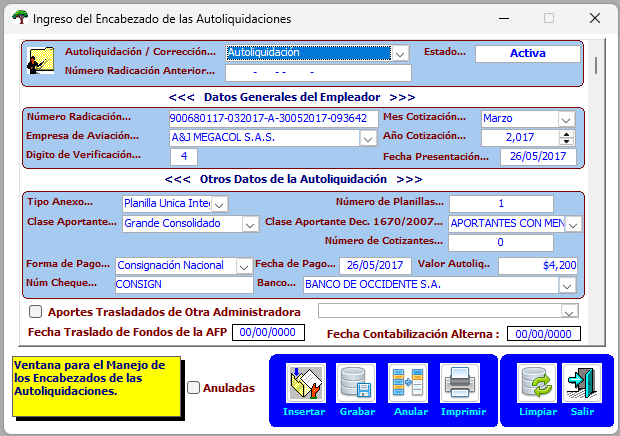

Registra los encabezados de las autoliquidaciones, para ello se debe dar clic en insertar, escoger la empresa de aviación que realizó el pago de aportes obligatorios de Ley 100 y diligenciar el resto de información soportado con el comprobante contable entregado por el área de contabilidad.
